動画のテーマ：森田療法について
このビデオは、当財団がYouTube公式チャンネルで定期的に配信している心の健康ビデオセミナーの講演内容の一部を視聴できる動画です。動画のテーマは森田療法についてです。
YouTubeへ
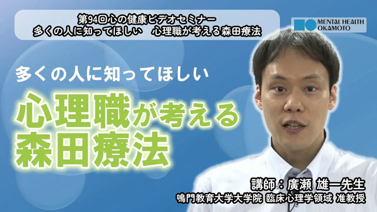
視聴動画（152） 6:09
多くの人に知ってほしい心理職が考える森田療法
（廣瀬雄一先生）
現代社会における生きづらさを切り口に、森田療法の考え方とその可能性を解説しています。
動画を見る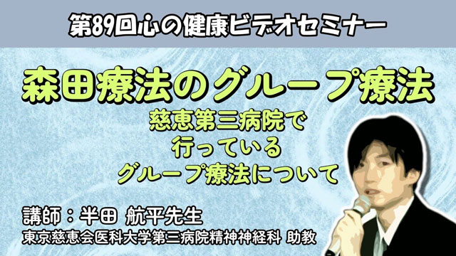
視聴動画（146） 8:51
森田療法のグループ療法〜第三病院で行っているグループ療法について
（半田航平先生）
森田療法におけるグループ療法の役割や活動内容、参加者の事例を紹介します。
動画を見る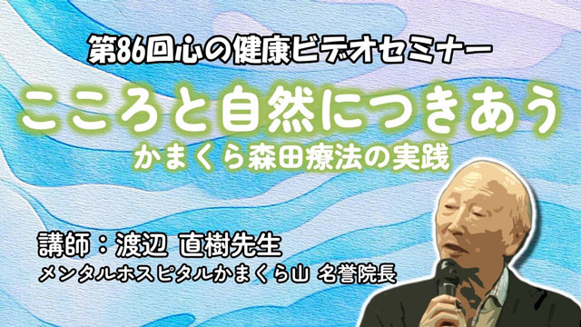
視聴動画（143） 4:57
こころと自然につきあう〜かまくら森田療法の実践
（渡辺直樹先生）
「こころ」とは何かを考え、かまくら森田療法の実践と応用例を解説する内容です。
動画を見る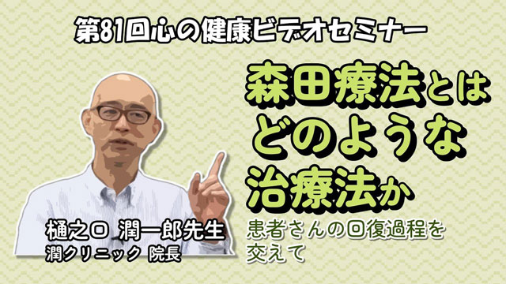
視聴動画（137） 5:05
森田療法とはどのような治療法か～患者さんの回復過程を交えて～
（樋之口潤一郎先生）
森田療法の考え方や治療方法について、強迫症（30代女性）の事例を取り上げながら詳しく解説します。
動画を見る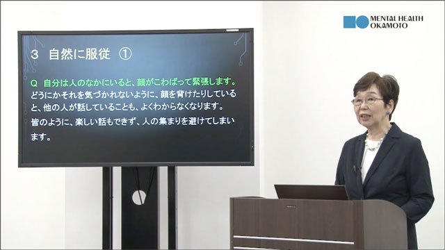
視聴動画（132） 5:18
日常に使える森田療法の活用法
依存症・アディクションと森田療法
（芦沢健先生）
依存症（アディクション）について、主にアルコール依存症に着目した解説を行います。
動画を見る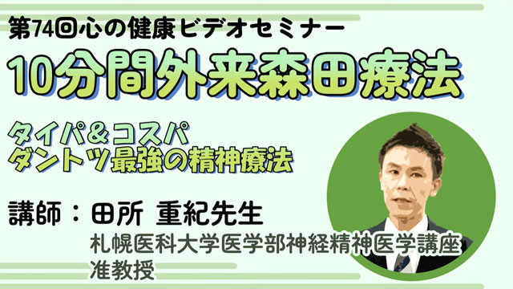
視聴動画（128） 5:18
10分間外来森田療法～タイパ＆コスパダントツ最強の精神療法
（田所重紀先生）
強迫症、社交不安症、身体症状症の事例解説と「10分間外来森田療法」の解説を行います。
動画を見る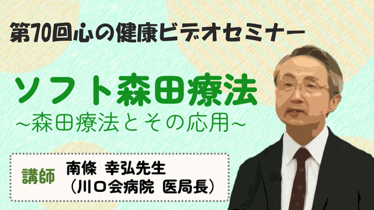
視聴動画（124） 4:55
ソフト森田療法～森田療法とその応用～
（南條幸弘先生）
森田療法の基本的な考え方や治療法を解説すると共にソフト森田療法の事例を紹介しつつ説明します。
動画を見る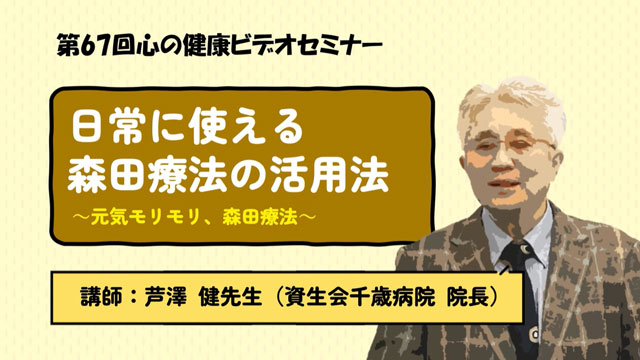
視聴動画（121） 6:00
日常に使える森田療法の活用法～元気モリモリ、森田療法～
（芦沢健先生）
森田療法の肝である症状をなくそうとする心の態度が、全ての症状発症の元であり、その基本的なポイントをユニークな五七五的なキーワードを使用して解説します。
動画を見る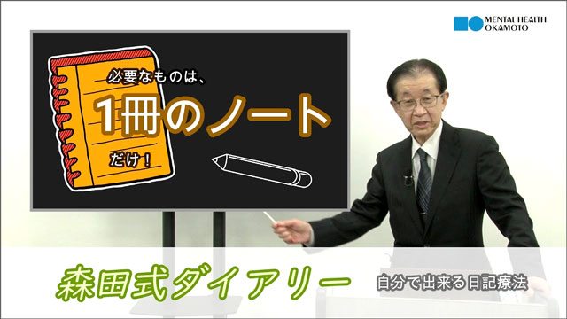
視聴動画（102） 7:32
「心は勝手に治る」～内発的モチベーションを醸成して治す森田療法～
（林吉夫先生）
森田療法の治療が目指すところや、大切な用語についても分かりやすく説明します。
動画を見る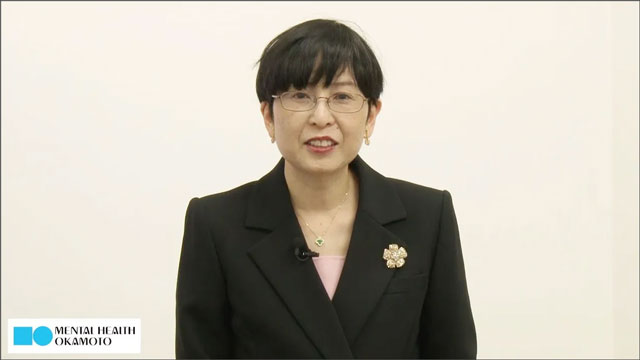
視聴動画（85） 14:17
HSPと神経質者の治療例と比較
（岩木久満子先生）
近年話題のHSP（ハイリー・センシティブ・パーソン）と神経質者の特徴と違いを、共に40代うつ病男女の治療例を通じて解説します。
動画を見る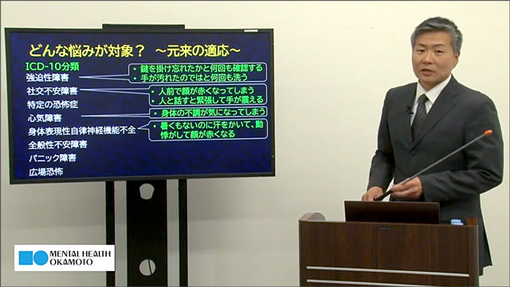
視聴動画（84） 18:52
森田療法ってどんな治療？
（谷井一夫先生）
森田療法の適応となる症状や、とらわれの機制、不安の捉え方について説明し、森田療法の治療で目指すものについて、不眠症、不眠恐怖の症例を交えて解説しています。
動画を見る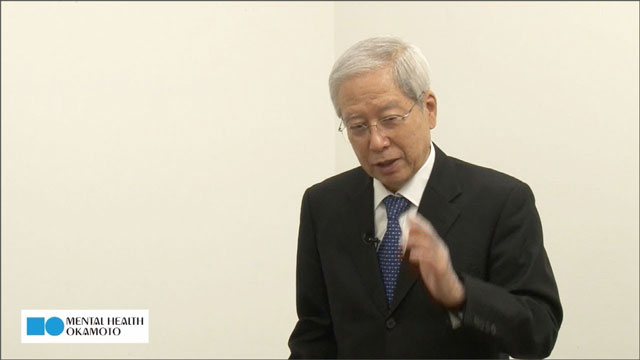
視聴動画（82） 15:53
森田療法の基本的考え方と回復の援助
（北西憲二先生）
近年話題のHSP（ハイリー・センシティブ・パーソン）と神経質者の特徴と違いを、共に40代うつ病男女の治療例を通じて解説します。
動画を見る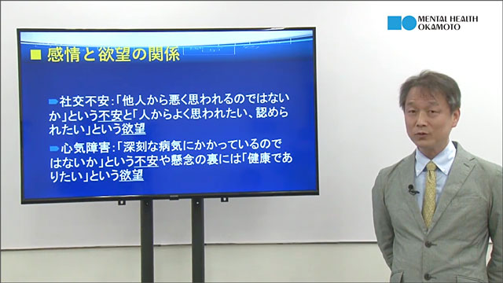
視聴動画（78） 9:29
森田療法を学ぶ
（齋藤直巳先生）
外来森田療法の治療の流れと精神交互作用、思想の矛盾など悪循環（とらわれ）について説明し、全般性不安症の事例を通じて解説します。
動画を見る
視聴動画（74） 7:15
うつ病の森田療法と集団精神療法
〜浜松医大の分かりやすい森田療法〜
（星野良一先生）
うつ病への森田療法の考え方と治療法及び浜松医大の集団精神療法の考え方や内容を解説します。
動画を見る
視聴動画（70） 8:25
森田療法は我々に何を教えてくれるのか
（樋之口潤一郎先生）
森田療法の特徴と治療の進め方について、どのようなポイントがあるか、そして患者はどのような考え方や行動を求められるかのを解説します。
動画を見る
視聴動画（69） 8:59
森田療法入門：身体症状に悩む方へ
（太田大介先生）
近年多い身体症状を伴う病気不安症の森田療法的な症状理解と治療法について、初心者にも分かりやすく解説しています。
動画を見る
視聴動画（67） 5:02
森田療法の逆説：不安の時代を生きる知恵
（新村秀人先生）
森田療法のうつ病に対する養生論的な考え方や治療法、又コントロール出来る事とできない事を分ける重要性を解説します。
動画を見る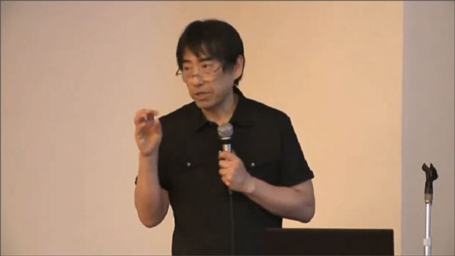
視聴動画（47） 5:13
森田療法とマインドフルネスの考え方と違い
（山田秀世先生）
森田療法とマインドフルネスの考え方や思想、実践方法はどのように違うのか、またその考え方を取り入れたJ-マインドフルネスとは、どんなものなのかを解説します。
動画を見る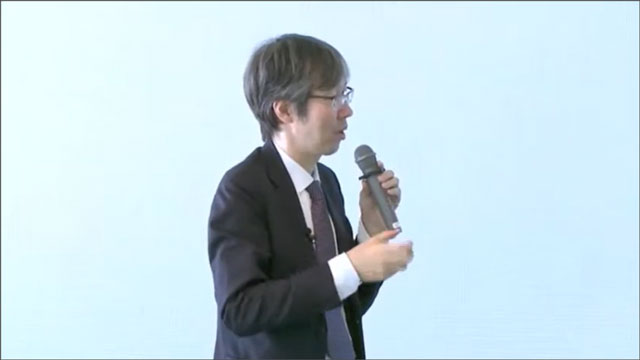
視聴動画（36） 12:22
森田療法の逆説の知恵とは
（新村秀人先生）
森田正馬が実際に患者に処方し、１回の治療でパニック患者を治した症例を中心に、その技法とカラクリについて解説します。
動画を見る
視聴動画（34） 3:13
森田療法による不安や寂しさ等の感情への態度-Q&A
（斎藤直巳先生）
森田療法は、不安や恐怖、苦しみ、悲しみ、寂しさ等の感情をどのように捉えるのか？森田療法の感情に対する態度を質疑応答の中で解説しています。
動画を見る

視聴動画（28） 3:09
現代の森田療法の理解ーQ&A（うつ病と日記療法）
（伊藤克人先生）
「うつ病で治る人と治らない人の違いは？」という質疑応答と「日記療法とはどういうものか？」という問いに関連した回答です。
動画を見る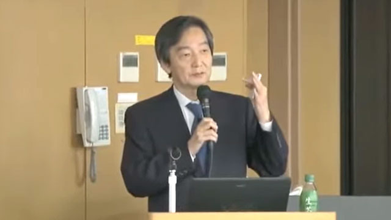
視聴動画（25） 13:05
「ストレス要因」と「反応、疾病」
（中村敬先生）
職場のメンタルヘルスを考える上での様々なストレス要因や緩衝要因、個人の要因など多様化した今日の状況とそれに対する反応や陥る疾病の原因や症状について解説します。
動画を見る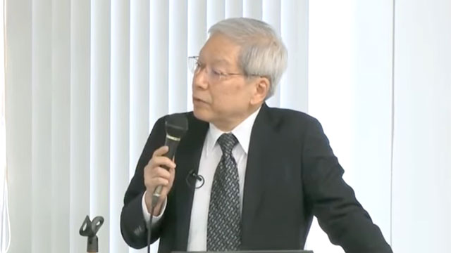
視聴動画（24） 17:41
「承認欲求」と「かくあるべき」
（北西憲二先生）
現在人のもつ不安や悩み、うつ等の症状の背景にある、認められたい欲求とかくあるべきという態度による仕事と対人関係のループ（悪循環）について解説します。
動画を見る
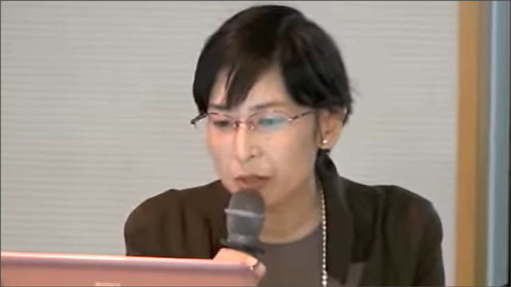
視聴動画（20） 26:00
森田正馬の神経質概念とは
（岩木久満子先生）
森田正馬が考えた神経質の特徴を長所と短所に分けて説明しており、神経質者の具体的なイメージが詳しく述べられています。
Q&Aを読む 動画を見る視聴動画（18） 9:14
森田療法入門講座（2）
（中村敬先生）
森田療法の基礎となった森田正馬の人間観。その背景にあるのは人間の死を恐れる恐怖とより良く生きたいという生の欲望であることを理解する。
動画を見る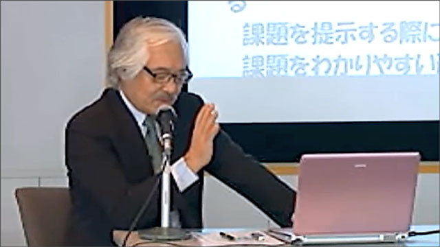
視聴動画（13） 7:31
浜松医大の森田療法（2）
（星野良一先生）
星野良一先生の目指した、分かりやすい森田療法とはどんなものか、その基本的な考え方と治療戦略を解説します。
動画を見る